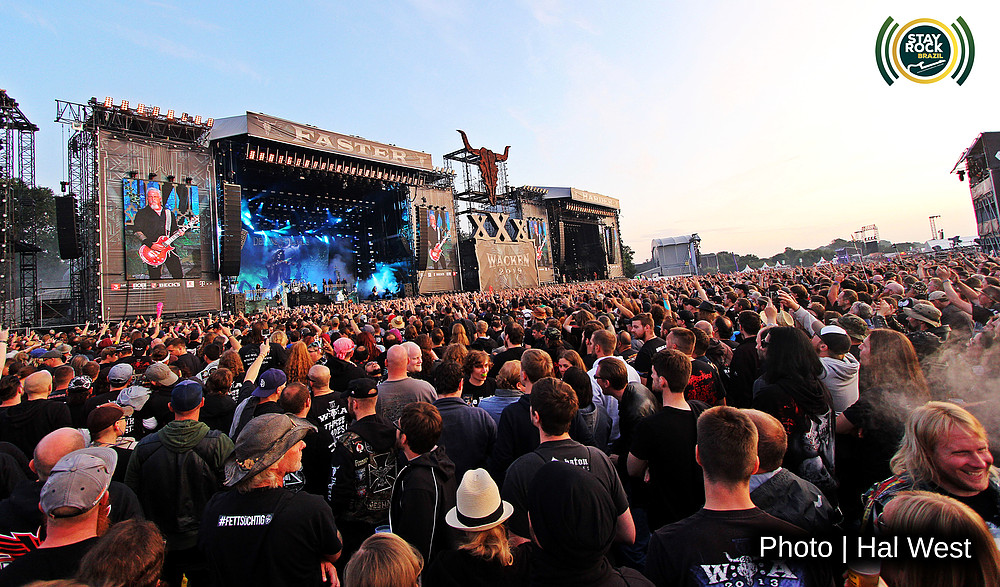
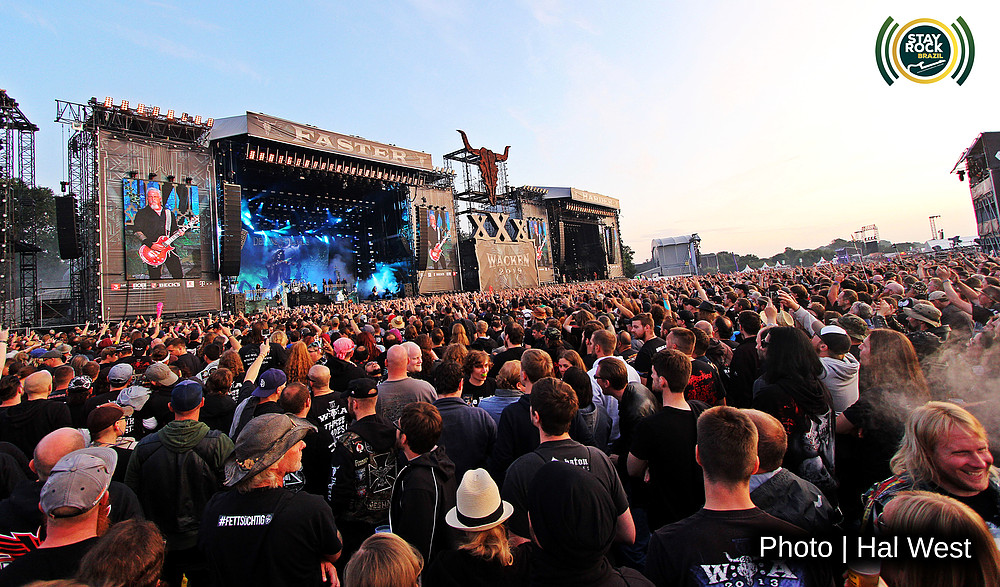

Wacken Open Air 2019
Wacken Open Air (W:O:A) é um festival de heavy metal que acontece no verão europeu, ao ar livre. Ele ocorre anualmente na pequena vila de Wacken, em Schleswig-Holstein, norte da Alemanha. Todos os anos, o festival atrai dezenas de milhares de pessoas, provenientes dos mais diferentes países, além de fãs de black metal, death metal, power metal, thrash metal, symph metal, folk metal e até mesmo metalcore, new metal e hard rock. A primeira edição do festival aconteceu em agosto de 1990 e envolveu apenas bandas relativamente desconhecidas alemãs. Inicialmente, o casting costumava ser formado principalmente por conjuntos da Escandinávia e da Europa em geral; posteriormente, bandas brasileiras, australianas e estadunidenses, dentre outras, também passaram a se fazer presentes em diferentes edições do festival. Gradativamente, o evento foi evoluindo ao longo de suas diversas edições e, atualmente, é considerado o maior festival de heavy metal do continente europeu. Tendo uma duração inicial de apenas dois dias, posteriormente o festival passou a se estender por três dias.

Galeria de Imagens
 
